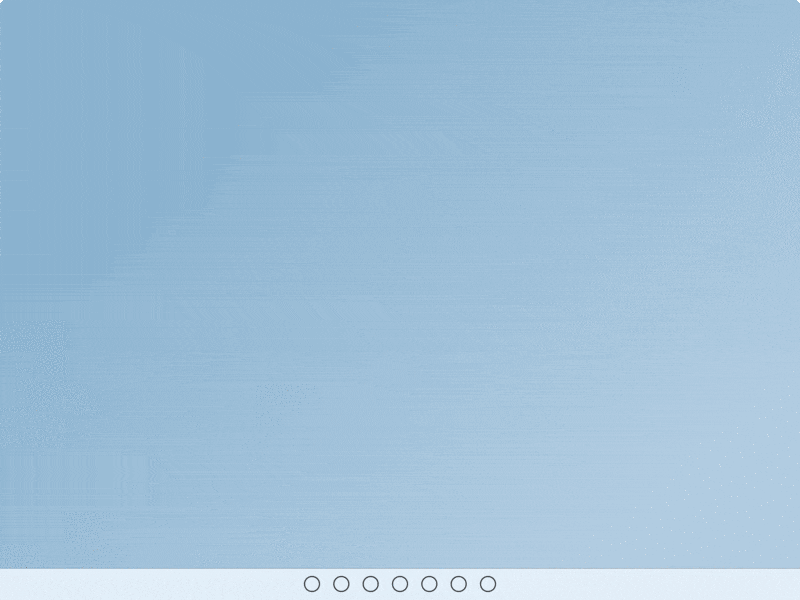
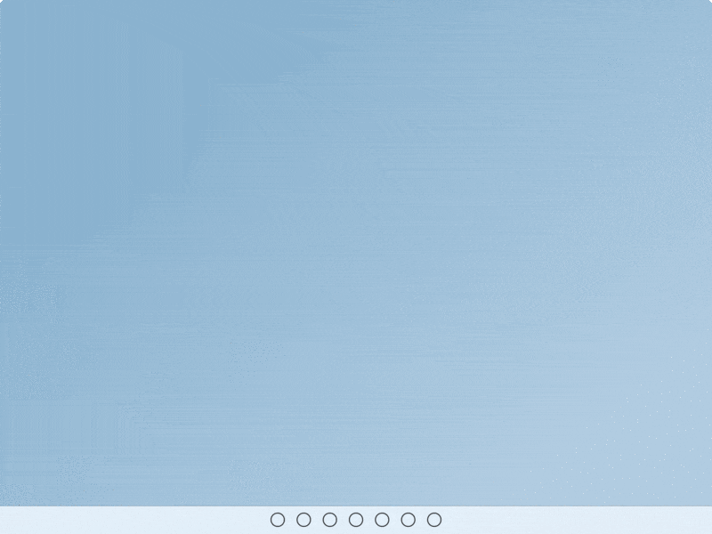
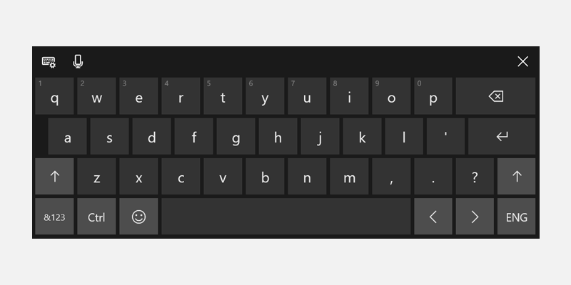

Touch interactions
This topic provides design guidelines for building custom, touch-optimized experiences in Windows apps.
Overview
Touch is a primary form of input across Windows and Windows apps that involves the use of one or more fingers (or touch contacts). These touch contacts, and their movement, are interpreted as touch gestures and manipulations that support a variety of user interactions.
Both the Windows SDK and the Windows App SDK include comprehensive collections of touch-optimized controls that provide robust and consistent experiences across Windows apps.
Use these guidelines when creating custom controls, experiences, and frameworks for your Windows apps.
Design principles
Consider the following as you design the touch experience in your Windows app.
Touch Optimized
Windows app experiences should feel inviting to touch, allow for direct manipulation, and accommodate less-precise interactions. Consider touch accelerators including gestures and pen and voice integration.
Consistent Across Postures
Your app should have a consistent experience regardless of the input method or posture the user is in. Changes from traditional desktop posture to tablet posture (see Recommended settings for better tablet experiences), as well as changes in orientation, should not be disorienting, but rather subtle and only as necessary. Your app should reflow UI in subtle ways to create a familiar, cohesive experience that meets users where they are.
Responsive
Apps and interactions should provide users with feedback at every phase (Touch down, action, touch up) of an interaction using animations that respond to a user's existing state while indicating possible actions. Animations should also maintain at least 60 fps to feel smooth and modern.
Honoring Touch Conventions
Responsive Feedback
Appropriate visual feedback during interactions with your app helps users recognize, learn, and adapt to how their interactions are interpreted by both the app and the Windows platform. Provide immediate and continuous feedback in response to the user's touch, that is noticeable, comprehensible, and not lost by distractions. This immediate feedback is how users will learn and explore the interactive elements of your app.
- Feedback should be immediate on touch down and moving objects should stick to the user's finger.
- UI should respond to gestures by matching user speed and movements, avoid using keyframe animations.
- Visual feedback should convey possible outcomes before the user commits to an action.
Do
Don't


For more info, see Guidelines for visual feedback and Motion in Windows 11
Touch Interaction Patterns
Honor these common interaction and gestures patterns to bring consistency and predictably to your experience.
Common Interactions
There are a set of common touch behaviors and gestures that users are familiar with and expect to work consistently across all Windows experiences.
- Tap to activate or select an item
- Short press and drag to move an object
- Press and hold to access a menu of secondary, contextual commands
- Swipe (or drag and release) for contextual commands
- Rotate clockwise or counterclockwise to pivot
Interactions
 Tap
Tap
 Swipe (or drag and release)
Swipe (or drag and release)
 Short press and drag
Short press and drag
 Rotate
Rotate
 Press and hold
Press and hold
For more info, see Guidelines for visual feedback and Motion in Windows 11
Gestures
Gestures lower the effort required by users to navigate and act on common interactions. Where possible, support UI with touch gestures to make it easy for users to navigate and act in an app.
If navigating between views, use connected animations so existing and new states are both visible mid-drag. If interacting with UI, items should follow user movement, provide feedback and, on release, react with additional actions based on drag position thresholds.
Gestures should also be actionable with flicks and swipes based on inertia and be within a comfortable range of motion.
- Drag or flick to go back and forth
- Drag to dismiss
- Pull to refresh
Gestures
 Drag or flick to go back and forth
Drag or flick to go back and forth
![Animated GIF of user pulling down on a collection of objects to refresh [2].](images/touch/touch-pull-to-refresh.gif) Pull to refresh
Pull to refresh
 Drag to dismiss
Drag to dismiss
For more info, see Page transitions and Pull to refresh.
Custom gestures
Use custom gestures to bring high frequency keyboard shortcut keys and trackpad gestures to a touch interaction. Aid discoverability and response through dedicated affordances with animations and visual states (for example, placing three fingers on screen causes windows to shrink for visual feedback).
- Do not override common gestures as this can cause confusion for users.
- Consider using multi-finger gestures for custom actions but be aware that the system has reserved some multi-finger gestures for rapid switching between apps and desktops.
- Be mindful of custom gestures originating near the edges of a screen as edge gestures are reserved for OS-level behaviors, which can be invoked accidentally.
Avoid accidental navigation
If you your app or game might involve frequent interactions near the edges of the screen, consider presenting your experience in a Fullscreen Exclusive (FSE) mode to avoid accidental activations of system flyouts (users will have to swipe directly on the temporary tab in order to pull in the associated system flyout).
Note
Avoid using this unless absolutely necessary as it will make it harder for users to navigate away from your app or use it in conjunction with others.
Touch keyboard experiences
The touch keyboard enables text entry for devices that support touch. Windows app text input controls invoke the touch keyboard by default when a user taps on an editable input field.

Invoke on text field tap
Touch keyboard should pop up when a user taps on a text input field – this will work automatically by using our system APIs to show and hide the keyboard. See Respond to the presence of the touch keyboard.
Use standard text input controls
Using common controls provides expected behavior and minimizes surprises for users.
Text controls that support the Text Services Framework (TSF) provide shape-writing (swipe keyboard) capabilities.
Touch keyboard signals
Account for input, posture, hardware signals that make touch keyboard the main mode of input (hardware keyboard is detached, entrypoints are invoked with touch, clear user intent to type).
Reflow appropriately
- Be aware that the keyboard can take up 50% of the screen on smaller devices.
- Don't obscure the active text field with the touch keyboard.
- If the touch keyboard is obscuring the active text field, scroll the app content up (with animation) until the field is visible.
- If the touch keyboard is obscuring the active text field but the app content cannot scroll up, try to move the app container (with animation).

Hit Targets
Make sure hit targets are comfortable and inviting to touch. If hit targets are too small or crowded, users must be more precise, which is difficult with touch and can result in a poor experience.
Touchable
We define touchable as a minimum of 40 x 40 epx, even if the visual is smaller, or 32 epx tall if the width is at least 120 epx.
Our common controls conform to this standard (they are optimized for both mouse and touch users).
Touch-optimized
For a touch-optimized UI, consider increasing the target size to 44 x 44 epx with at least 4 epx of visible space between targets.
We recommend two default behaviors: Always touch optimized or transition based on device signals.
When an app can be optimized for touch without compromising mouse users, especially if the app is used primarily with touch, then always touch optimize.
If you transition the UI based on device signals for device posture, always provide consistent experiences across postures.
Match visuals to touch target
Consider updating visuals when touch target dimensions change. For example, if hit targets increase when users enter tablet posture, UI representing the hit targets should also update to help users understand the state change and updated affordance. For more info, see Content design basics for Windows apps, Guidelines for touch targets, Control size and density.
Portrait Optimization
Support responsive layouts that account for both tall and wide windows to ensure an app is optimized for both landscape and portrait orientations.
This will also ensure app windows display core UI visuals properly in multitasking scenarios (apps snapped side-by-side with portrait aspect ratios) regardless of orientation and screen sizes.